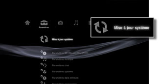

Paramètres > Mise à jour système
Mise à jour système
Des mises à jour du logiciel peuvent inclure des correctifs de sécurité ainsi que des fonctionnalités, des paramètres ou autres éléments nouveaux ou revus qui modifient votre système d'exploitation actuel. Il est recommandé de veiller à ce que votre système utilise toujours la dernière version du logiciel système.
Il existe deux façons d'effectuer une mise à jour. Elles sont répertoriées ci-dessous :
- Mise à jour par Internet
- Mise à jour par support de stockage
Avis
- Pendant une mise à jour, ne mettez pas le système hors tension et ne retirez pas le support. Si une mise à jour est annulée avant d'être terminée, le logiciel système risque d'être endommagé et le système peut devoir être dépanné ou échangé.
- Pendant une mise à jour, la touche d'alimentation du système et la touche PS de la manette sans fil sont inactives.
- Selon le contenu, il se peut que vous ne puissiez pas procéder à la lecture sans effectuer auparavant la mise à jour du logiciel système.
Mise à jour par Internet
Pour télécharger les données de mise à jour directement sur le système depuis Internet. La dernière mise à jour est automatiquement téléchargée.
1. |
Sélectionnez  |
|---|---|
2. |
Sélectionnez [Mise à jour par Internet]. |
 (Paramètres) >
(Paramètres) >  (Mise à jour système).
(Mise à jour système).Mise à jour par support de stockage
Pour utiliser les données de mise à jour enregistrées sur un disque, un Memory Stick™ ou un autre support. Téléchargez les données de mise à jour depuis un site Web à l'aide d'un ordinateur. Pour plus d'informations, visitez le site Web SIE de votre région.
Conseils
- Des données de mise à jour peuvent également être contenues dans certains disques de jeux, logiciels vidéo BD disponibles dans le commerce et autres types de supports disques. Lors de la lecture d'un disque contenant des données de mise à jour, un écran s'affiche pour vous guider tout au long de la procédure de mise à jour. Suivez les instructions affichées pour procéder à la mise à jour.
- Un adaptateur USB approprié (non fourni) est nécessaire pour utiliser le support de stockage avec certains modèles.